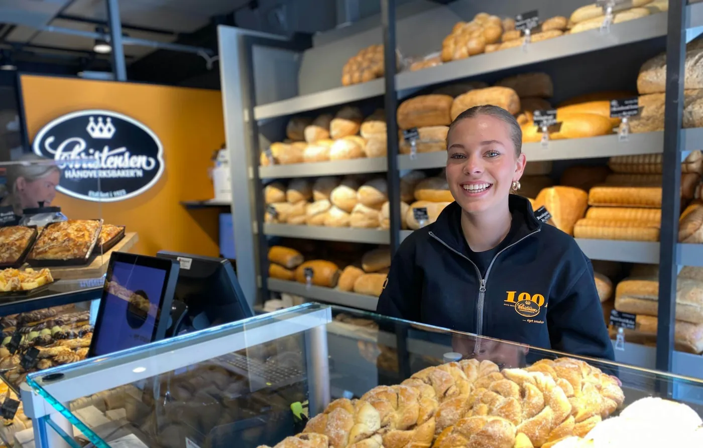
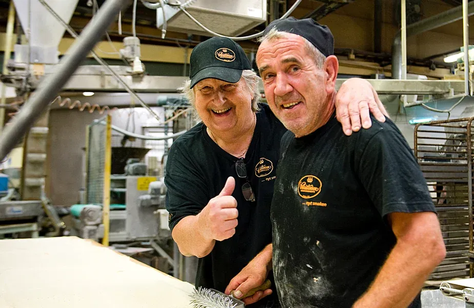

Gressvik · siden 1923
De gode kaker og bakervarer.
Noe godt til lunsj – og litt ekstra til kaffen. Hver dag smører vi fristende baguetter, horn, focaccia, matpakker og friske salater.
1923Grunnlagt
100+År med bakeri
2Steder i Fredrikstad
NettbutikkBestill på nett
Produkter
Noe godt for enhver smak
Kaker, brød og lunsj – bakt hos oss, med råvarer vi kjenner.

Historien
Fra vognskjul til bakeri
Historien startet i 1923, som et lite bakeri i et ombygd vognskjul. Den gang ble deigen eltet for hånd, og ovnene var underfyrt med kull.
Melsekkene veide 100 kilo og måtte bæres opp trappene. Vannet måtte hentes en kilometer unna i 50-liters spann – med kjerre om sommeren og kjelke om vinteren.
- Eltet for hånd.
- Kullfyrt ovn.
- Utkjøring med hest og kjerre eller sykkel.
1923Startet i et ombygd vognskjul
100+År med bakerihistorie
100 kgMelsekkene den gang
GressvikCaféen vår
Har du lyst på en god lunsj?
Stikk innom oss – eller bestill i nettbutikken.